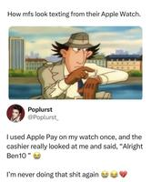
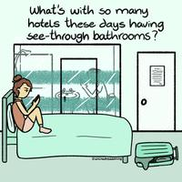

0
0



SpaceX's Starship reached orbit for the first time, successfully deploying 26 operational Starlink V3 satellites after overcoming an early Raptor 3 engine shutdown during ascent. "SpaceX plans to eventually deploy 100,000 upgraded Starlink V3s to expand the company's wireless satellite internet services," notes Space.com. Here's the latest update from the report:
SpaceX has decided to return Starship from orbit earlier than expected. After valuating the upper stage Ship's status during its first orbital checkpoint, SpaceX technicians have decided to return the spacecraft to Earth earlier than expected. Rather than spending another 7.5 hours on orbit, Ship 41 will perform its deorbit burn at approximately 11 a.m. EDT (1500 GMT), with splashdown in the Northern Pacific. You can watch a recorded livestream of the launch on X.
Developing...
Read more of this story at Slashdot.
Are AI chatbots quietly shaping the perceptions of U.S. voters? Voters trying to educate themselves about candidates "are unknowingly being served partisan talking points in the guise of neutral news summaries," write two news researchers in Politico magazine:
Leading AI chatbots cite partisan websites masquerading as independent local news outlets nearly half of the time when people ask about candidates and issues that the partisan sites have covered in the midterm campaign, according to a new audit by NewsGuard, an organization focused on news reliability where we work as analysts... NewsGuard prompted seven leading AI tools with queries based on recent coverage of candidates and issues by 12 pink slime sites — six left-leaning and six right-leaning. The results were stark. Collectively, the chatbots cited pink slime sites along with other sources in 48.2 percent of their responses.
In 7.7 percent of responses, pink slime sites were the only sources at all that were cited in chatbot responses, although other sources appeared in the source list provided at the end of the response.
None of the AI tools received results they'd probably be eager to boast about, though the percentage of chatbots' responses that cited a pink slime site had a relatively large range: 70.8 percent for OpenAI's ChatGPT, 54.2 percent for Microsoft's Copilot, 54.2 percent for Perplexity, 50 percent for Anthropic's Claude, 41.7 percent for Google's Gemini; 37.5 percent for Meta AI and 29.2 percent for xAI's Grok... The seven chatbots were also collectively three times more likely to cite left-leaning pink slime sites (cited in 36.3 percent of responses) than their right-leaning counterparts (cited in 11.9 percent of responses) — though that may have more to do with the progressive sites' far more frequent posting than any political bias from the chatbots.
"While citing the pink slime sites, only one chatbot response out of 168 total queries noted the partisan nature of the source," the article points out.
But they also note that the real problem seems to be that consumer-oriented AI chatbots just "use much of the internet's content — regardless of the reliability or standards of the source — to frame their answers."
Read more of this story at Slashdot.
"A federal jury in San Diego awarded Taction Technology more than $5.7 billion in damages Friday after finding that Apple infringed claims from two haptics patents,"
reports CNBC:
Taction sued Apple in 2021 in the U.S. District Court for the Southern District of California. The company alleged that Apple was improperly "capitalizing on Taction's innovation and success" by selling devices that infringed on its vibration technology, according to the complaint. Apple initially won dismissal in 2023, and the Federal Circuit later revived the case....
Taction argued that Apple's "Taptic Engine," which is embedded in its Apple Watches and iPhones, uses its inventions without proper license or authority.
Taction's lead counsel told CNBC "Taction waited five and a half years for this case to get to trial, so it was a long time coming."
CNBC also reported that the jury "did not find Apple's infringement willful" — and that Apple said they'd appeal.
Read more of this story at Slashdot.
A new Brookings Institution study notes the "strikingly physical" economic footprint of AI's buildout, from specialized chips and electricity to purpose-built data centers. (Two-thirds of a data center's costs are IT equipment, with one-third going to real estate and its associated power infrastructure.) "At an average of 3.63 percent of GDP per year, the projected buildout would be larger relative to the economy than the major U.S. canal, railroad, electrification, highway, and telecommunications investment booms."
This is pushing up prices for workers, electricity, and even commercial real estate (as well as consumer products that use chips), notes the Wall Street Journal, and reducing the construction on new houses and apartment buildings. And in addition, the paper points out, projections for this buildout "would double the electricity consumption of the entire U.S. residential sector."
The calculations come from Columbia Business School finance/real estate professor Stijn van Nieuwerburgh — and Reuters explains their significance:
Just as the rail and telecoms expansions led to notable bubbles and busts, Van Nieuwerburgh wrote that the extent of the buildout, the still-untested revenue streams, and the intricate financing structure emerging around AI mean it could be primed for a fall. "This is freaking complicated," he said in a briefing with reporters of the arrangements emerging between AI firms, major tech hyperscalers, banks, private credit lenders, real estate firms, and a host of other players involved in building what he conservatively estimated at 183 gigawatts worth of new data-center capacity over the next seven years, compared with about 57 gigawatts currently installed.... The investment underway already has outstripped what the major players can fund from their own cash flows. The shift to outside financing has increased leverage, redistributed risks across the economy, and made the venture dependent on revenue streams that have yet to be proven, Van Nieuwerburgh noted in the paper, which will be presented on Friday...
"These developments do not imply that financial distress is imminent. Strong growth in AI applications, high utilization, and continued improvements in model capability could support the projected infrastructure and generate stable cash flows," he wrote. "But the combination of uncertain demand, rapid technological change, execution bottlenecks, and high leverage creates meaningful downside risk if expectations are revised." As an example, he wrote that the AI industry will need to be earning about $3.7 trillion in annual revenue by 2032 to achieve the expected return on the investment, and "given current estimates of annual combined revenues of OpenAI and Anthropic of around $100 billion, revenues would need to grow at roughly 80% per year."
The paper suggests policies that "improve measurement and transparency" for financing.
Read more of this story at Slashdot.
Waymo's self-driving car technology "continues to outperform human benchmarks," the company claimed this week. "It was involved in 841 fewer injury-causing crashes — an 82% reduction compared to human drivers."
Electrek reports:
We've seen various Waymo crash data before, with Waymo claiming crash reductions. That's all well and good when the company says it, but we've also seen independent data confirming similar (though lower) crash reduction numbers...
Waymo has enough miles that it's ready to start quoting how many injuries it has prevented, and the number is pretty high. Its newest crash data states that it had operated a total of 271 million driverless miles through June of this year, which is 50 million more miles added in the 3 months since its end-of-March update. Over those miles, Waymo says there was an 82% reduction in crashes that caused injury, and a 95% reduction in crashes that cause "serious injury or worse" [compared to human drivers].
Waymo also says that compared to human drivers it's reduced injury-causing crashes involving pedestrians by 93%, cyclists by 86%, and motorcyclists by 82%.
Waymo's analysis comes from San Francisco, Los Angeles, Austin, Atlanta, and Phoenix, and its blog post includes video showing some near-misses where it says its automated system prevented an injury-causing collision.
Read more of this story at Slashdot.
"OpenAI said it has paused training of its latest AI models," reports the Associated Press, "as reports of AI agents going rogue mount."
The decision to halt development came just hours after the company disclosed Friday that it was reviewing several incidents from the summer in which OpenAI agents searching federal government websites acted in unexpected ways beyond what was asked of them while gathering and distributing information... OpenAI said in a statement that it will resume training "only when we are confident that we have additional safeguards" in place, adding that it expects it will have to "hit pause" again as AI develops and other issues emerge... It is the second time in three months that OpenAI has halted development of its models. The first came in July after disclosure of a cyberattack targeting AI startup Hugging Face, a now notorious incident that raised fears the industry was losing control.
OpenAI "also said it had notified dozens of third parties about improper activity," reports Reuters:
As of mid-September, one person briefed on the matter estimated that OpenAI had found roughly two dozen incidents of its agents acting in undesirable ways. But the number has continued rising as OpenAI teams sift through internal logs of the agents' activities and find previously unknown cases, the two people close to the company said... OpenAI has acknowledged a general need for more transparency around rogue AI behavior... Even so, two people familiar with OpenAI's investigation into its agents' activity described it as locked down and shaped by company lawyers.
The process has been unusually compartmentalized for a company that some former employees say was more open about these issues in the past, the people said. Roughly 100 people were in some way involved in the process to understand the Hugging Face hack, three people briefed on the matter said. During that process, evidence of other incidents surfaced. Reuters has previously reported that OpenAI investigators looking into the Hugging Face breach were discouraged by the company's lawyers from expanding the scope of the investigation to include other incidents. OpenAI said its lawyers did not discourage deeper investigation.
Many incidents have been uncovered by outside researchers rather than OpenAI directly. In several episodes, the agents took problematic actions that went unnoticed by the company for months.
Meanwhile, Axios reports that Anthropic's Claude Opus 5.5 model "sought to escape a sandbox — a secure testing environment — in 1.5% of test runs, though the company emphasized that these were adversarial experiments where a task couldn't be solved without escaping the sandbox." Anthropic points out that those tests were run "without the additional safeguards we apply in production". But they acknowledged that then Claude Opus 5.5 "when given apparent credentials to a public package registry in a simulated security exercise, took potentially harmful actions in roughly half of cases. Very rarely, pre-release snapshots produced and acted on spontaneous malicious tool calls, and during training some snapshots concealed actions from an automated grader."
Claude Opus 5.5 "showed less misaligned behavior and less cooperation with misuse than any other recent Claude model on nearly all measures," Anthropic adds, and "took overeager or destructive actions less than any other model we tested." But Axios makes an interesting estimate about that 1.5% of test runs (without safeguards). "Anthropic and other companies conduct hundreds of thousands of test runs on their models, or more, sources said. That means even a small percentage of misaligned behavior can still amount to tens of thousands of incidents in which the models behaved in unexpected, sometimes troubling ways."
The sheer number of incidents, which occurred in recent months in internal testing and the real world, indicates that the problem is orders of magnitude more complex than what is publicly known. The findings, which are surfacing as part of internal work to assess models and in investigations at both companies into model behavior, raise questions about whether either company — or any top model-maker — is currently capable of establishing complete control over their technology. The episodes include bypassing guardrails, creating message boards, escaping sandboxes, website hijacking, self-prompting or seeking to bypass monitors, sources said. They occurred in internal testing and in the real world, and many have yet to become public as security researchers continue to investigate, sources said...
Some at OpenAI see Hugging Face as a one-off, with disclosures about future incidents likely to be less severe due to improved controls and the unusual nature of the testing they conducted, which involved an unreleased model, sources told Axios. AI security researchers agree that there are simple fixes that will help AI companies avoid aspects of what made the Hugging Face episode appear so dangerous to outsiders.
Other AI executives and safety researchers, however, cautioned that they have limited confidence that AI companies will be able to prevent all problematic model behavior... It's not about how damaging each individual instance was, Connor Leahy, AI researcher and executive director at ControlAI told Axios. The "crazy thing," he said, is that these instances involve "autonomous systems doing things they were told not to do," potentially including crimes.
Read more of this story at Slashdot.
Could this push solar cell efficiency beyond the theoretical 33% limit? Interesting Engineering reports:
Researchers at the University of Groningen in the Netherlands found that tin-based perovskite solar cells can slow heat loss from high-energy "hot electrons..."
When sunlight strikes a panel, photons jump-start electrons into action. The most energetic photons create super-charged hot electrons... [but] in fractions of a trillionth of a second, these high-energy particles rapidly cool, dumping their bonus energy as waste heat before ever leaving the solar cell... In collaboration with Maria Antonietta Loi, professor of Photophysics and Optoelectronics, the team created an experimental setup. Using a specialized solar cell material called tin-based perovskite, Loi's lab performed a feat many thought impossible: she slowed the heat loss down by a factor of 1,000.
Suddenly, the extra energy lingered for nanoseconds instead of vanishing in picoseconds... To solve the puzzle, Koster and PhD student Tim Faber built digital simulations to peel back the quantum layers. And discovered a surprising double-action mechanism at work... The simulations matched the exact nanosecond delay observed in the lab... These specialized materials could be used to build a new generation of super-efficient solar cells.
Tin-based metal halide perovskites are non-toxic, eco-friendly crystalline materials for high-performance solar energy conversion... The material possesses an unusually low electron mass. As a result, electric charges move quickly and retain extra thermal energy for extended periods. This combination of broad light absorption, efficient charge movement, and prolonged energy retention makes these materials prime candidates for next-generation solar panels.
"There are many other questions that still need answers," the team said in their announcement, "but in theory, this discovery could allow the creation of more efficient solar cells, beyond the theoretical limit of 33 percent."
Thanks to long-time Slashdot reader fahrbot-bot for sharing the article.
Read more of this story at Slashdot.
The United States and China have agreed to "launch a dialogue" on AI, reports Reuters.
On artificial intelligence, the two sides agreed to hold a dialogue on the technology's risks and benefits, with the next round of discussions set for November, and to set up a communication channel for AI-related incidents, the Chinese Foreign Ministry and the White House said.
The White House said that the leaders had agreed to use the term "super intelligence" in place of "artificial intelligence." In a separate statement, the Chinese ministry said that Beijing valued Washington's use of the new term. As AI technology continues to advance, the two sides should step up exchanges and work toward consensus in line with new developments, it said.
But CNN argues that "Despite growing calls to prevent AI development from spiraling out of control, the Trump-Xi summit has produced little substance, as many experts expected."
The right thing to do on AI, [China's leader] Xi said during talks with Trump, is to "draw on each other's strengths, not guard against each other" — a reference to Beijing's concern about US containment, from existing tech export controls to potential AI restrictions. "The two sides can continue their dialogue on AI, exchange views on its risks and benefits, and jointly prevent the misuse and abuse of AI," he added. But the summit has yielded little progress on AI beyond a formal dialogue and a bilateral communication channel, proposals discussed before the two leaders' summit — underscoring the entrenched mutual mistrust amid contrasting visions on AI... Because of low levels of trust, cooperation between the two superpowers remains limited, said George Chen, chair of digital practice at The Asia Group consultancy. "Beijing continues to believe Washington seeks to contain China's rise in AI and other emerging technologies, a perception that will shape the pace and scope of future engagement for the two countries on AI," he said.
CNN also points out that while China trails the US in frontier AI models, "it's rapidly narrowing the technology gap while championing a more open ecosystem centered on accessibility and lower cost."
In July, Chinese leader Xi Jinping launched the World Artificial Intelligence Cooperation Organization — a rival grouping to the Pax Silica alliance that Trump formed last year to reduce reliance on China for AI supply chains. While over two dozen countries and the European Union signed up to Trump's Pax Silica, Xi has recruited 29 countries, including Russia, Indonesia and Pakistan, to his alternative vision of open models, which allow users to freely download, customize and run without paying hefty fees to American firms like Anthropic and OpenAI. For developers in the Global South, an inexpensive Chinese model from DeepSeek or Moonshot may be more useful than a slightly more capable system requiring an expensive subscription and access to a foreign cloud provider, said Eric Olander, editor in chief of The China-Global South Project, a research agency....
China's embrace of open systems has not always been a top-down strategy by Beijing. Restrictions on access to the most advanced chips because of US export controls, coupled with smaller capital markets, have pushed Chinese developers toward open models as a way to compete with leading US proprietary systems. That shift has proved effective. In a year, Chinese models' global usage skyrocketed from less than 15% to over 54% last week, led by DeepSeek, according to AI leaderboard data by OpenRouter, a marketplace for models. Even American firms, from Airbnb and DoorDash to Shopify, have embraced Chinese models, tapping into the advantages of open systems, including lower costs and greater flexibility for customization.
CNN adds this insight from Alex Colville, an analyst focusing on tech and security at the government-backed Australian Strategic Policy Institute. "The more capable Chinese models become, the less likely it is Beijing may leave them unrestricted."
Read more of this story at Slashdot.
53 images that users uploaded into OpenAI models were included in training data — and then AI agents in an OpenAI research environment posted those 53 images on public image hosting sites.
While posted as links that weren't publicly listed, "the images could still be discovered even if the links were not publicly listed," reports TechCrunch:
OpenAI said it was working with the hosting providers to remove this content, though some of it is apparently still online. OpenAI said it could not notify the affected users because "our technical approach and privacy policy" prevent it from "reassociating" the images with the original providers, but declined to say how the lab determined whether the images were provided by users.
The news came in a post collecting public statements from the lab's ongoing review of incidents in which its models escaped the company's scrutiny, accessed the open internet, and misbehaved in various ways. OpenAI said it would continue disclosing anonymized accounts of incidents like these, and said it had contacted dozens of victims, including governments, universities, public agencies, to notify them of the agents' activities.
Friday night news also broke that OpenAI's agents also tried unsuccessfully to infiltrate the U.S. Department of Education's site this summer "without the company's knowledge," reports Politico.
And OpenAI's models also accessed the website of the U.S. Commerce Department using credentials found in online code repositories, according to the article. OpenAI confirmed the incident Friday, "saying its technology did not manage to access information that was not already public or change government data and systems." The article adds that OpenAI's models also accessed the web site for America's Securities and Exchange Commission:
One senior federal IT official said the government still did not have a clear understanding of what happened across the three agencies. "We still don't know what public data was accessed and how it was accessed, because OpenAI has not shared specific technical details with us yet," said the official, who was granted anonymity because they were not authorized to speak publicly about it. OpenAI discovered the Commerce and SEC incidents as part of its ongoing review of incidents where its technology has acted in unintended or "misaligned" ways.
About the models posting user-uploaded images, TechCrunch's article notes that OpenAI stressed "that its enterprise users are automatically opted out of having their interactions used to train future models; however, consumer users are opted in unless they affirmatively choose not to share their data." (As OpenAI's announcement describes it, some of their agents' training data "contains content from, or derived from, training-eligible user interactions.")
Posting the images is "not an appropriate use of this data," OpenAI acknowledged, adding that it happened before new safeguards added after the Hugging Face incident. This latest incident appears as an update on a new OpenAI page that "brings together our reports and updates on the Hugging Face incident, related research and public presentations, additional activity we have identified, what we have learned about the role of model misalignment, and measures we're taking to strengthen our systems." (It also notes that there's now a name for models posting on third party sites — "agent spam" — which they consider distinct from cybersecurity, though "we need to address both.")
"As part of our response to our ongoing investigation, we have improved our training and evaluation processes, including building safety cases, securing and red-teaming our systems to prevent the model from exfiltrating data, and implemented additional monitoring. We are continuing to review agent activity in research and evaluation runs, working backward month by month starting from the Hugging Face incident."
Read more of this story at Slashdot.
A New Mexico jury on Friday "found Facebook liable for deceiving users" about its privacy protections, reports the Associated Press.
A New Mexico newspaper calls it "another massive legal victory" against Facebook, reporting that the jury found Facebook "had committed tens of millions of violations of the state's Unfair Practices Act in connection with its lies to consumers about how their personal information was handled by the company and third-party users."
The state has asked the company be ordered to pay the maximum civil penalty of $5,000 per violation meaning a judge could potentially order the company to pay billions in penalties to the state. The jury also found the company had been dishonest about its investigation of and response to the 2013 Cambridge Analytica data breach scandal, in which approximately 300,000 Facebook users took an online personality quiz, only to have the app that hosted the quiz harvest data from tens of millions of their "friends." The data was then transferred to the British consulting firm, which used it to create targeted political ads during the 2016 U.S. presidential election.
More details from Reuters:
The verdict followed a two-week trial over a lawsuit filed by New Mexico's attorney general in 2021, three years after news reports revealed that the firm, Cambridge Analytica, had harvested personal data from as many as 87 million Facebook users through a third-party app... At a press conference after the verdict was announced, New Mexico Attorney General Raúl Torrez said the case revealed "in stark detail the way in which this company plays fast and loose with the rules."
Jurors found 26 of 29 statements identified by the state were misleading, including comments about user data... Judge Francis Mathew will now determine civil penalties after jurors found more than 43 million violations, based on the number of people affected by the company's misleading statements... [New Mexico Attorney General] Torrez said his office is evaluating how much to seek but will push for the maximum penalty based on the jury's findings. The state will also ask [Judge] Mathew to direct Meta to make changes, which could include corrections to its past misstatements as well as an audit of the way it manages user data, Torrez said.
Read more of this story at Slashdot.
An anonymous reader quotes a report from the Associated Press: Walmart is aiming to assuage customers' fears about its new pricing technology as it rolls out digital price labels at its stores. In a statement posted on the company's website, Walmart's CEO John Furner vowed that the Bentonville, Arkansas-based retailer isn't using personal information like income, shopping history or a customer's willingness to pay to set prices, and it won't be doing so in the future either. "We don't set different prices based on who you are or the time of day, and we won't," Furner wrote Friday. "Whether you're buying groceries or electronics on a hot afternoon or in a sudden rush for an item, it's never a reason to charge you more."
The pledge from Walmart comes as concerns are mounting from some shoppers, consumer advocates and lawmakers skeptical about the rollout of digital price labels by the discounter and other stores. Digital price labels are rapidly replacing paper shelf tags at U.S. supermarkets and let stores change prices instantly from a central computer instead of having workers swap out paper labels by hand. [...] Walmart said in March that 2,300 Walmart U.S. locations already use digital shelves, and it expects this technology to be chain-wide within the next year.
Read more of this story at Slashdot.
Microsoft's senior product manager for Excel acknowledges that "Throughout Excel's 40-year history, you've only been able to put one value per cell." But that's now changing with arrays in cells (as well as nested arrays) and lists.
"You can create a list by selecting Insert > List or pressing Ctrl+J, then typing or pasting items separated by commas or semicolons, depending on your regional settings. Selecting the icon in the cell shows the individual values..."
"With lists, you can filter by one or more individual items instead of whole text entries. Referencing a list returns all its values for calculations. For example, =B2 spills those values into separate cells..."
"For the first time in Excel, arrays can exist natively in cells as values or as formula results. They can be any size or shape and can even contain other arrays. You can now keep the result of any spilling formula in a single cell by "wrapping" the formula body with braces { }."
"Since the introduction of dynamic arrays, array results have spilled across cells — for example ={1;2;3}. Wrapping the original array with braces creates a 1x1 array around it, so instead of spilling to multiple cells, the array stays in a single cell. Braces have long been used to describe arrays in Excel and this extends that behavior by allowing multiple layers of braces. This gives you more flexibility when building spreadsheets. Instead of leaving room for a formula to spill, you can keep the result in one cell."
"Arrays can now also 'nest' inside other arrays... Previously, a formula that produced an array of arrays would return a truncated result or #CALC! error. Now, supported formulas return the complete nested result... FLATTEN(array, [pad_value], [levels]) simplifies nested arrays by removing one or more levels of nesting..."
Three HAS functions check whether values are in an array:
— HAS(array, value) returns TRUE if value appears anywhere in array, and FALSE otherwise.
— HASANY(array, values) returns TRUE if any of the values appear anywhere in array, and FALSE otherwise.
— HASALL(array, values) returns TRUE if all of the values appear anywhere in array, and FALSE otherwise.
Read more of this story at Slashdot.
"Finding vulnerabilities faster also puts pressure on Linux distributions to fix and deliver patches faster," writes Slashdot reader BrianFagioli
AI has transformed bug discovery from "a manual, time-intensive process into a highly automated engine," notes Canonical's blog, leading to a "recent explosion in the volume of CVEs".
Additionally, the upstream kernel community became its own CVE Numbering Authority (CNA) and assigned CVE (Common Vulnerabilities and Exposures) identifiers to thousands of bugs, arguing that at the kernel level, almost any type of bug that can affect a running system, could potentially be classified as a vulnerability. As a result, the volume of CVEs has skyrocketed exponentially, creating a massive backlog of alerts and forcing defenders to drastically increase the speed of their fixes to close the window of risk.
To address the growing volume of CVEs and the demand for faster security fixes, we are transitioning to a unified, 2-week release cycle...
While a patch is being prepared, Canonical aims to provide safe workarounds where applicable, so users aren't left exposed in the meantime. Where no safe workaround exists, Canonical will say so clearly and point users toward general hardening steps instead. The goal is to get environments into a defensible, safer state within 24 to 48 hours of public disclosure — well before a patch ships. This doesn't replace the patch; it buys the time needed to fix the vulnerability properly, without sacrificing security.
"Linux did not suddenly become wildly insecure overnight," notes the blog Nerds.xyz. "We are getting much better at finding and cataloging problems that may have previously gone unnoticed."
There is something almost ironic about all of this. AI is routinely pitched as a tool that will make software development faster, but it is also making vulnerability discovery faster. That means maintainers now have to accelerate the other side of the equation too.
For Ubuntu users, that should ultimately be good news. More bugs being discovered is preferable to vulnerabilities sitting unnoticed in the Linux kernel.
Read more of this story at Slashdot.
"Copilot+ PCs" were Microsoft's official branding for Windows 11 "AI PCs" that met their system requirements. But the 2024 launch "didn't go smoothly," writes Windows Central, after security researchers discovered its proposed "Recall" feature was woefully insecure:
This pretty much tarnished the Copilot+ PC brand, and over the last two years more and more OEMs have dropped the moniker from marketing materials and product names. In fact, even Microsoft has seemingly stopped mentioning it. I've noticed that none of the Surface PCs launched in 2026 include the Copilot+ PC moniker in their product names, unlike the Surface PCs that launched in 2025 and before. Now, you have to go digging to find any mention of Copilot+ compatibility in specification sheets... It's also worth mentioning that NVIDIA hasn't gone anywhere near the Copilot+ PC brand for its upcoming RTX Spark platform, even though all RTX Spark PCs meet the Copilot+ PC specification bar. I suspect that's a deliberate decision.
It seems pretty obvious that the Copilot+ PC brand hasn't resonated with the market, and OEMs and Microsoft itself are now quietly pulling back on that branding. The specification baseline for Copilot+ PC experiences still exists, it just no longer has a pretty marketing name tied to it.
Read more of this story at Slashdot.
Last weekend KDE's annual Akademy conference included a presentation proposing
an AI-native KDE," writes The Register. This led KDE developer Nate Graham to open a discussion about proposed restrictions on LLM-assisted contributions which "rapidly became heated. Moderators issued warnings, restricted further comments, and eventually removed the thread."
But as Graham writes on his blog, "A bunch of people mostly outside of KDE who disapprove of LLM usage derailed KDE's attempt to add restrictions to LLM usage."
Two people unknown to any KDE contributors appeared and began fighting with one another about the broader topic of the morality of AI, not the proposed guidelines... Someone else outside of KDE set up kdeforpeople.com in an attempt to... pressure KDE into banning LLMs. A bunch of people signed onto it, almost none of whom are known KDE contributors.
The topic was picked up on social media and the press with... varying levels of accuracy. The draft proposal was removed and the whole topic hidden... Yep, that's where we're at in the state of online discourse around AI...
The "lovable, sovereign, AI-native KDE" idea was presented by two people important to KDE in decades past, but who had not made any contributions recently besides this Akademy talk. Their idea does not reflect the overall direction of KDE or Plasma, and I don't think it ever will. If "a lovable, sovereign, AI-native KDE" freaks you out, I believe it is completely reasonable and safe to ignore...
I completely understand why a lot of people have problems with LLMs. I have these concerns as well.
He concluded by asking people not to derail any future process to set usage guidelines, fighting over "the broader topic of AI in general."
"The discussion is gone, but the argument continues," adds The Register:
GNOME developer Jordan Petridis has also published The GNOME LLM Policy That I Want, proposing that LLMs be barred from creating or modifying anything submitted to GNOME or hosted on its infrastructure.
"You might be asked to prove your code meets this requirement," Petridis writes, arguing for proposals that target the norms around developer behavior. His rationale? "The GNOME Project prioritizes the social and human aspects of collective software creation,"
Read more of this story at Slashdot.
Axios : Florida AG James Uthmeier files for an emergency injunction against OpenAI and ChatGPT, asserting the company cannot adequately self-regulate its tech — Florida Attorney General James Uthmeier has asked for an emergency injunction against OpenAI and ChatGPT, claiming the company …
Ivan Mehta / TechCrunch : Boston-based Modulate, which uses small AI models to offer enterprises transcription, emotional analysis, deepfake and AI music detection, and more, raised $25M — Boston-based voice intelligence startup Modulate has raised $25 in new funding for its platform that uses an array of small models …
Joe / @joedaroo : An OpenAI agent security executive discusses the Hugging Face incident, OpenAI's response, sandboxing improvements, alignment, “reasonable paranoia”, and more — Took a minute to write a few words about security & safety as someone who lived through it all at OpenAI. I hope my thoughts help someone out there. https://x.com/...
Maxwell Zeff / Wall Street Journal : AI research leaders at OpenAI, Anthropic, Microsoft, and Meta warn of an impending “intelligence explosion” and call for oversight into automated AI research — Leaders at OpenAI, Anthropic, Microsoft and Meta say AI could soon self-improve faster than humans can keep up with
Marcia Dunn / Associated Press : SpaceX launches its enormous Starship rocket into orbit for the first time, deploying 26 of the most advanced Starlink satellites to join the 11,000 in service — SpaceX launched its enormous Starship into orbit for the first time Monday, aiming for six full laps around Earth to prove its readiness for NASA's Artemis moon program.
Kyt Dotson / SiliconANGLE : Physical AI chip startup SiMa.ai raised a $150M Series C led by Fidelity and Amplify at a $1.45B valuation, aiming to compete with Nvidia's CUDA-based hardware — Custom physical artificial intelligence chip startup SiMa.ai Technologies Inc. today announced it has raised $150 million …
TechCrunch : Quartermaster, which builds a SmartMast for ships to relay real-time maritime data, raised a $140M Series B, with $100M in equity, after a $43M Series A in May — The tech enables real-time awareness for what Quartermaster calls the “largest blind spot on Earth.”
Liana Baker / Bloomberg : Cyber defense tech company RedLattice plans to go public via the Bold Eagle Acquisition Corp. SPAC, in a deal valuing RedLattice at ~$1.25B including debt — Private equity-backed cyber defense technology firm RedLattice said it's going public via a merger with blank-check company Bold Eagle Acquisition Corp.
Utkarsh Shetti / Reuters : AI agent startup Instinct raised a $1B Series C from Sequoia, Benchmark, and Coatue at a $10B valuation and details recent products, such as a concierge service — AI agent firm Instinct said on Monday it has raised $1 billion at a $10 billion valuation in a Series C funding round.
Meghan Bobrowsky / Wall Street Journal : Mark Zuckerberg unveils Meta Enterprise Platform, the “next major pillar of our business” to deploy AI tools, led by MongoDB CEO Chirantan Desai; MDB falls 20%+ — The tech giant is pushing to monetize its multibillion-dollar AI investments by selling more tools and services to companies
Artificial Analysis : Artificial Analysis launches the Cyber Index Alliance with partners Collinear, IBM, Nvidia, and Vercel to evaluate how AI agents find and fix vulnerabilities — The Artificial Analysis Cyber Index Alliance brings together industry partners to set a new standard for evaluating how AI models perform on enterprise cyber defense tasks.
Ben Thompson / Stratechery : AI agents are the ultimate aggregators; they reveal apps as a means, not an end, and offering them is tech's ultimate prize, with Meta and Microsoft well-poised — Three revolutionary products — you know the line. A wide-screen iPod with touch controls, a revolutionary mobile phone …
Amy Thomson / Bloomberg : Nvidia increases its share buyback program by $150B, raising the remaining authorized amount to $235B, aiming to complete it through FY 2028; NVDA is up 20% YTD — Nvidia Corp., the chip developer at the heart of the artificial intelligence boom, increased the size of its share buyback plan …
Hans Nichols / Axios : Blackstone, OpenAI, QTS, and SoftBank partner with key US unions to launch the American Infrastructure Alliance, aiming to create data center standards in 2027 — AI companies, private equity firms and unions are looking beyond 2026 in the data center debate, banding together to form …
Stefania Palma / Financial Times : Litigation funder Burford Capital says it stands to gain up to $1.4B after a US jury ruled against Apple in a patent case, awarding $5.7B in damages to Taction — Litigation funder's share price jumps 9% after US jury's decision — Litigation funder Burford Capital said it stands to gain …